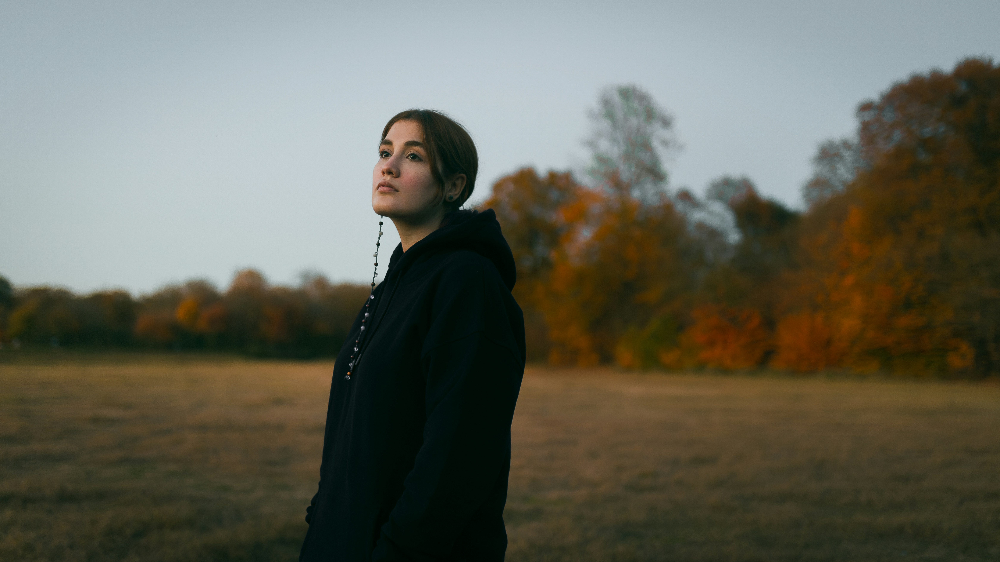
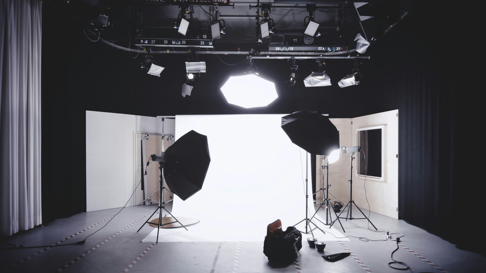
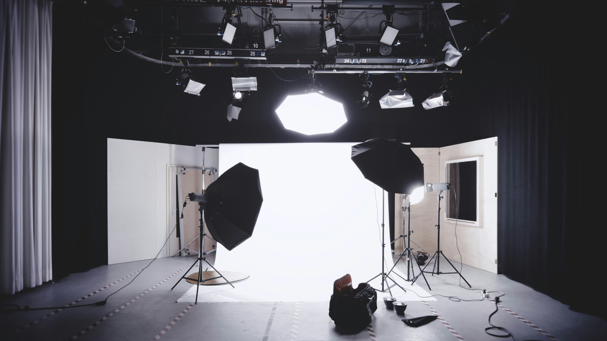
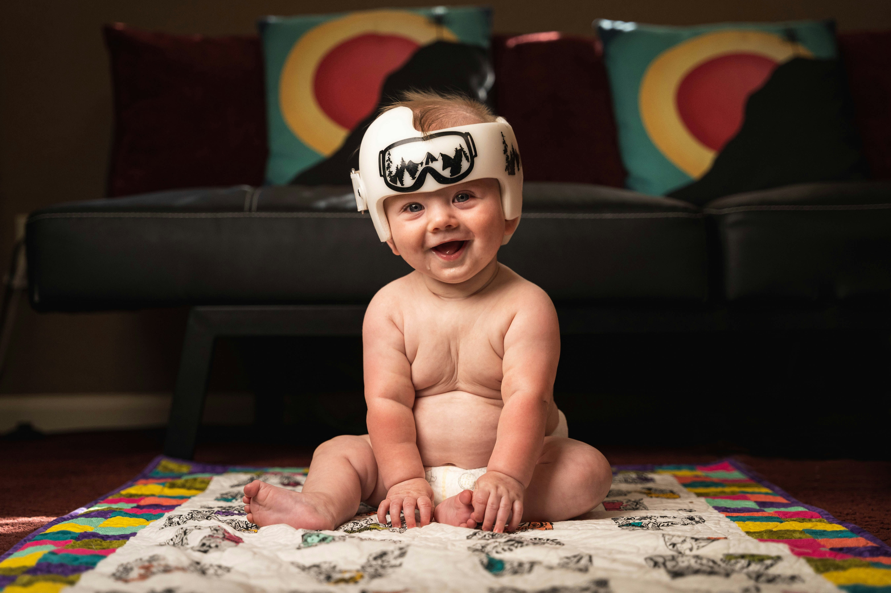

Our Services
Ankit Photography offers a wide range of photography services tailored to capture special moments and create timeless memories. Their services include:

 

 Wedding Photography: Ankit Photography specializes in capturing the magic and romance of weddings through a unique blend of candid and posed shots. They focus on documenting the emotions, love, and joy of your special day, from the intimate moments during the ceremony to the lively celebrations at the reception.
With a keen eye for detail, they ensure every aspect of your wedding is beautifully preserved, from the intricate decorations to the heartfelt exchanges between loved ones. Their team uses the latest photography techniques and equipment to create stunning visuals that tell the story of your wedding day.
With a keen eye for detail, they ensure every aspect of your wedding is beautifully preserved, from the intricate decorations to the heartfelt exchanges between loved ones.
Their team uses the latest photography techniques and equipment to create stunning visuals that tell the story of your wedding day.
Wedding Photography: Ankit Photography specializes in capturing the magic and romance of weddings through a unique blend of candid and posed shots. They focus on documenting the emotions, love, and joy of your special day, from the intimate moments during the ceremony to the lively celebrations at the reception.
With a keen eye for detail, they ensure every aspect of your wedding is beautifully preserved, from the intricate decorations to the heartfelt exchanges between loved ones. Their team uses the latest photography techniques and equipment to create stunning visuals that tell the story of your wedding day.
With a keen eye for detail, they ensure every aspect of your wedding is beautifully preserved, from the intricate decorations to the heartfelt exchanges between loved ones.
Their team uses the latest photography techniques and equipment to create stunning visuals that tell the story of your wedding day.
 Engagement and Pre-Wedding Photography: Engagement and pre-wedding photography is a celebration of love, capturing the anticipation and excitement leading up to the big day. This type of photography focuses on preserving intimate moments between the couple, offering a glimpse into their relationship dynamics and personalities.
Engagement sessions often take place in significant locations to the couple—whether it's the park where they first met, a favorite café, or a stunning natural landscape. These sessions are more casual and relaxed, allowing couples to be themselves and enjoy the moment. The goal is to capture genuine expressions of joy, love, and connection.
Pre-wedding photography, on the other hand, is usually more stylized and planned. Couples might choose to wear wedding attire or complementary outfits and select locations that reflect their story or theme. These sessions can be creative and adventurous, sometimes involving props, themes, or even destination shoots. The aim is to create a collection of artistic and beautiful images that can be used in wedding invitations, décor, or as keepsakes.
Engagement and Pre-Wedding Photography: Engagement and pre-wedding photography is a celebration of love, capturing the anticipation and excitement leading up to the big day. This type of photography focuses on preserving intimate moments between the couple, offering a glimpse into their relationship dynamics and personalities.
Engagement sessions often take place in significant locations to the couple—whether it's the park where they first met, a favorite café, or a stunning natural landscape. These sessions are more casual and relaxed, allowing couples to be themselves and enjoy the moment. The goal is to capture genuine expressions of joy, love, and connection.
Pre-wedding photography, on the other hand, is usually more stylized and planned. Couples might choose to wear wedding attire or complementary outfits and select locations that reflect their story or theme. These sessions can be creative and adventurous, sometimes involving props, themes, or even destination shoots. The aim is to create a collection of artistic and beautiful images that can be used in wedding invitations, décor, or as keepsakes.
 Baby Photography: Baby photography is a delightful art form that captures the pure innocence and charm of newborns and infants. The essence of baby photography lies in preserving those fleeting, precious moments of early life, creating timeless keepsakes that families can cherish for generations. A successful baby photography session requires a comfortable, safe, and warm environment. Photographers often use soft blankets, cushions, and gentle lighting to ensure the baby feels secure and at ease. Patience is key, as sessions must be flexible to accommodate the baby's feeding, napping, and mood changes. Creative props and outfits add a whimsical touch to baby photography. Cute hats, headbands, themed costumes, and miniature furniture can enhance the visual appeal of the photos. However, simplicity is crucial to avoid overwhelming the baby and maintaining focus on their natural beauty. Close-up shots highlighting the baby's tiny fingers, toes, and delicate facial features are a staple in baby photography. These intimate details emphasize the fragility and beauty of newborns.
 Portrait Photography: Portrait photography is an art form focused on capturing the essence and personality of an individual or group. The goal is to create a visually compelling and emotionally engaging image that tells a story about the subject.
A successful portrait session begins with understanding the subject. Photographers often spend time getting to know their clients, discussing their preferences, and planning the shoot accordingly. This helps in creating a comfortable environment where the subject can relax and be themselves.
Lighting is a critical element in portrait photography. Natural light is often preferred for its soft and flattering quality, but studio lighting can also be used to create dramatic effects. The use of reflectors and diffusers can help control shadows and highlight the subject's features.
Posing plays a significant role in portrait photography. The photographer guides the subject into various poses that flatter their appearance and convey the desired emotion. Natural and candid poses are often more appealing as they capture the subject's true personality.
Background and composition are also important. A simple background keeps the focus on the subject, while an interesting backdrop can add context and depth to the image. The rule of thirds, leading lines, and other compositional techniques help create a balanced and visually appealing photo.
Post-processing is the final step in portrait photography. Editing software is used to enhance the image, adjusting exposure, color, and sharpness, and retouching any imperfections.
Ultimately, portrait photography is about connecting with the subject and capturing their unique qualities, creating a timeless image that tells their story.
Portrait Photography: Portrait photography is an art form focused on capturing the essence and personality of an individual or group. The goal is to create a visually compelling and emotionally engaging image that tells a story about the subject.
A successful portrait session begins with understanding the subject. Photographers often spend time getting to know their clients, discussing their preferences, and planning the shoot accordingly. This helps in creating a comfortable environment where the subject can relax and be themselves.
Lighting is a critical element in portrait photography. Natural light is often preferred for its soft and flattering quality, but studio lighting can also be used to create dramatic effects. The use of reflectors and diffusers can help control shadows and highlight the subject's features.
Posing plays a significant role in portrait photography. The photographer guides the subject into various poses that flatter their appearance and convey the desired emotion. Natural and candid poses are often more appealing as they capture the subject's true personality.
Background and composition are also important. A simple background keeps the focus on the subject, while an interesting backdrop can add context and depth to the image. The rule of thirds, leading lines, and other compositional techniques help create a balanced and visually appealing photo.
Post-processing is the final step in portrait photography. Editing software is used to enhance the image, adjusting exposure, color, and sharpness, and retouching any imperfections.
Ultimately, portrait photography is about connecting with the subject and capturing their unique qualities, creating a timeless image that tells their story.
Landscape Photography: Ankit Photography also offers landscape photography, capturing the beauty of nature and scenic locations with stunning visuals
With their expertise and attention to detail, Ankit Photography ensures that every photograph tells a story and preserves the joy and love of unforgettable milestones for years to come